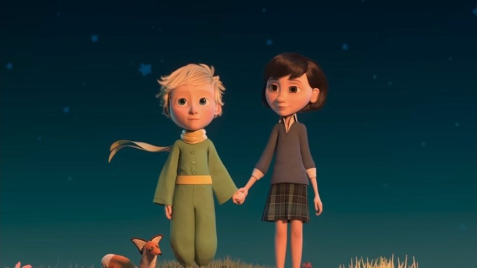

Посвящение: моей возлюбленной Бине
В чём суть. Я проснулся с мыслью, что хочу написать статью о том, как в человечестве происходит развитие по уровням авиюта.
Подобно тому, как это писал Бааль Сулам*2 — но он писал для своего времени и в контексте иудаистской традиции, не выходя из неё. Поэтому там, конечно, не было ни магов, ни эзотериков, ни эргрегоров: это было «ни-ни», нельзя. Он был строго ограничен тем контекстом, в котором работал, и его задача не выходила за пределы этого контекста.
Наша задача шире. Она выходит за пределы локальных контекстов — она глобальная.
Я хотел описать, как развиваются авиюты — это и есть те самые "ростки"*1, о которых пишет Зоар. Те самые ростки, что показались из земли. А что такое земля? Земля — это платформа. Наша общечеловеческая платформа "человек разумный". То, что еще называют "коллективным бессознательным".
В этой платформе целиком находится первая, нулевая ступень, которую Бааль Сулам назвал «массы». Она и эта платформа — одно и то же: их там просто нет. «Неживое» означает, что у них нет ничего своего — нет собственного движения, индивидуального движения. Человек этого уровня и есть сама платформа, и всё. Она управляет целиком его жизнью, его мыслями, его чувствами, сопутствующими этим мыслям. Своего движения у него нет вовсе.
Это общая ступень, на которой находится более 90% населения планеты.
Дальше у Бааль Сулама следуют богачи и правители, а затем мудрецы*3. Я бы поместил всех троих — богачей, правителей и мудрецов — на один уровень, растительный. Это ещё нужно обдумать, потому что моя задумка была не об этом уровне, а о верхнем. Но допустим: богачи, правители и мудрецы этого мира участвуют в жизни уже отчасти самостоятельно — хотя на деле под управлением тех или иных общих эргрегоров этого мира.
То есть индивидуально со своим эргрегором они ещё не работают. У них нет представления о том, что есть реальный мир за пределами того мира, который они окормляют. Но при этом каждый из них уже окормляет его каким-то образом. Этот уровень я бы назвал растительным.
Над ними идут маги. Это уже как животные. Маги этого мира — но какого мира? У каждого мага свой мир*4, потому что у них уже собственные эргрегоры, в том числе наследуемые, разные по составу и качеству.
Суть в том, что все эти эргрегоры по сути животного типа. Это эргрегоры, как мы говорим, «старого катнута»: они организованы не по принципу Круга*5, а по закрытому типу. Их строение в общем-то похоже друг на друга — различия в основном в мощности; есть фазовые переходы, при которых количество переходит в качество, но мы их пока не рассматриваем.
Эти эргрегоры создают отдельные миры. Их адепты при этом продолжают находиться в общем мире, но у каждого есть и "отдельная реальность". Они обретают определённые силы и способности, которые им даруют силы этого эргрегора, и всю свою жизнь работают, выполняя задания эргрегора и на его пользу: бенефициаром их жизненных усилий является сам эргрегор и его развитие.
Получается, что половина механизмов реального мира для них уже открыта — та половина, которую открывает эргрегор. Другая половина закрыта: в соответствии с ней они сами находятся под управлением этого эргрегора и фактически не имеют здесь свободы выбора. И та отдельная реальность, в которой они существуют, создана эргрегором специально для них — чтобы их тонали существовали в ней так, будто это реальный мир, не подозревая, что на самом деле они "играют в компьютерную игру".
Это третий уровень авиюта.
Есть и четвёртый уровень — последний, на котором я хотел сосредоточить внимание. Это уровень МЖОСИ*6, уровень Мужчины и Женщины, которых на данный момент просто нет. Точнее, они есть - я думаю (даже уверен), что они есть, но они настолько атомизированы... Они могут принадлежать к абсолютно любым социальным уровням. Они могут быть человеком этого мира, который никогда ничего не понимал, и не имел желания понимать, в эзотерике, в духовных учениях, а просто идёт по жизни. Но он идёт по жизни не один: их двое. И обстоятельства их встречи, и суть их отношений совершенно особенные.
Они находятся в постоянном, как бы вечном зивуге — в состоянии абсолютной влюблённости, которое не уменьшается с годами. Оно находится на уровне Рош, на уровне Ацилута (я уже перехожу на каббалистические термины). Оно не уменьшается потому, что они любят "не ради себя". Т.е. они любят друг друга — а не какое-то абстрактное божество*7, — но всё равно не ради себя. Эта любовь, которая есть у них и есть между ними, она не привязана к эгоистическим формам этого мира.
Скажу даже так — и не сильно ошибусь: единственная причина, по которой они остаются абсолютно верны друг другу, в том, что вокруг них - "планета обезьян". Вокруг нет ни одного потенциального партнёра, с которым можно было бы в подобные же отношения им вступить, кроме как они двое. Они двое - как пришельцы с другой планеты. Но на самом деле эта любовь строго полигамна. Она не привязана к личностям обезьянок этого мира; так привязана только любовь и те отношения, которые есть у нижних слоёв этой пирамиды.
Они чувствуют, они знают, что эта Сила Любви (Ор Хохма - каб. ивр.), которая между ними, Она на самом деле управляет миром. Она управляет человеком, Она управляет его судьбой, Она управляет всем происходящим вокруг. И помимо этого, Она управляет эволюцией человеческого Духа — то есть эволюцией всех нас, всего мира и нас в частности. Она ведёт нас, как каждого конкретного человека, так и всё человечество. Они видят пути, по которым происходит это "ведение", и сами включены в эти пути.
Они живут ради этой любви и ради друг друга — но, фактически, они делают дело. Они созданы не просто так: поскольку ничего "просто так" не бывает в творении. Для того, чтобы жить — нужно ещё и выполнять какую-то полезную работу. Но одно другого не отменяет, а только взаимодополняет, и включается одно в другое.
И этот уровень свободы — его не описать словами. Это истинная свобода — свобода от эргрегоров. Это истинная свобода, потому, что они сами, фактически, создают свой эргрегор; они и есть эргрегор — и одновременно свободны*8 от всех эргрегоров.
К сожалению, пока что в нашей реальности мало возможностей для того, чтобы эта форма действительно могла раскрыться, могла открыто существовать — да и вообще могла существовать. Потому, что есть определенные жёсткие ограничения на её формирование и развитие.
В идеале это должно происходить с детства. Только та форма, в которой соединение происходит с раннего детства, фактически со школьного возраста, способна быть полноценной — именно той формой, которая соответствует концу эволюции, по которой нас ведёт эта Сила, о которой я говорил выше. Потому что именно эта форма является целью данной эволюции, которую мы проходим.
Ещё много столетий мы будем к этой цели двигаться, но мы обязательно её достигнем. Потому что всё, что делает эта Сила, она делает не так, как человек: «может, у меня получится, может, нет; а может, прилетит метеорит и меня прихлопнет, и меня нет».
Для этой Силы нет границы между прошлым, настоящим и будущим. Она действует везде, сразу, одновременно. Она достигает той Цели, которую Она поставила в мысли Своей сразу же действием — т.е. "мысль" и "действие" для Неё одно и то же, и оно не ограничено временем: это действие совершается во всём времени сразу*9.
Как я протягиваю руку, беру чашку — и я её взял. А для Неё, Она "протягивает руку и берёт" - и это "время", которое "будущее". А мы - "начинаемся" уже "после того", как это действие Ею совершено*10. Мы находимся во времени — мы как фильм, как программа, которая выполняется: она уже составлена, она уже есть. И её результат — фактически это дело времени. Дело нашего времени.
А результат — форма МЖОСИ, как мы её называем: «мужчиной и женщиной Он создал их». Она является финальной стадией нашей эволюции — которой мы достигаем, и которая видна уже сейчас. Не была видна нашим предшественникам, Бааль Суламу тем более — и тем, кто был до него.